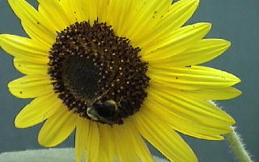
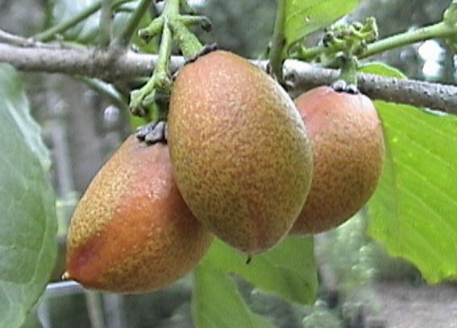

WHAT WE GROW
Below you'll find a list of the fruits and vegetables we grow on our 20-acre farm. Four acres are dedicated to vegetables and seven acres are planted with exotic fruit and nut trees. Please keep in mind that our produce is only available in season. In some seasons, produce may be frosted, whirled by small tornadoes or ravaged by insects.
We are always looking for new varieties of plants that will grow in our climate to diversify our lives and diets. If you have any seed, tree, plant or herb suggestions, let us know. We are trying to bring as many varieties that grow in our area as we can into our collection.


GREENS
Arugula, Longstanding Bloomsdale Spinach, New Zealand Spinach, Strawberry Spinach, Collards, Winterbor Kale, Redbor Kale, Red Giant Mustard, Florida Broadleaf Mustard, Red & Green Italian Dandelions, Escarole, Endive, French Sorrel, Red Orach, Radicchio, Rainbow Swiss Chard.
ASIAN GREENS
Yu Choy Sum, Okahijiki, Joi Choi, Bok Choy, Okame, A Choy (Taiwan lettuce).
LETTUCE
Red & Green Romaine, Red & Green Buttercrunch, Red & Green Oak Leaf, Lollo Rossa, Tango, Batavian, Gold Rush, Crisp Mint, Forellenschuss, Yugoslavian Red, Red Velvet, Concept, Flame, Marvel of Four Seasons, Black-Seeded Simpson, Blackjack, Red Grenobloise, Speckled Bibb, Red & Green Deer Tongue, Great Lakes, Anuenue, Integrata Red, Freckles.
BEANS
Italian Roma, Purple Green Bean, Yellow & Green French Filet Beans (haricots verts), Edamame Soybean (butterbean).
POTATOES
Russian Fingerling, All Red, All Blue, Cranberry, Yukon Gold and Sweet Potato.
RADISHES
Giant Daikon, Miyashige Daikon, China Rose Daikon, Beauty Heart Daikon, Nero Tondo (black radish), Easter Egg (mix), D'Avignon, Large Green Beer Radish, White Icicle, Giant Red, Japanese Scarlet.
TOMATOES
Juliet Plum, Baby Beefsteak, White Cherry, Yellow Cherry, Matt's Tiny Wild Cherry, Purple Cherokee.
TOMATILLO
Green & Purple varieties.
HOT PEPPERS
Riot, Habanero, Bird Pepper (ouch!), Jalapeño, Marbles.
SWEET PEPPERS
White, Yellow, Red, Orange, Green & Brown Bell, Lipstick Pimiento, Hungarian Wax, Bulldog.
EGGPLANT
Long White, Purple & Green, Large Italian Purple, Turkish Italian Orange, Orient Express.
SUMMER SQUASH
Green & Yellow Zucchini, Eight Ball, Yellow Straightneck, Pattypan, Yellow & Green Striped.
WINTER SQUASH
Spaghetti, Turban, Small Sugar Pumpkin, White Pumpkin, Gold Nugget, Butternut.
BEETS
White, Golden, Forono, Red Ace, Detroit Red, Chioggia.
TURNIPS
Purple Top, Red Top, Green Top, Rutabaga, Parsnips.
CARROTS
Royal Chantenay, Kyoto Red, Yellow Kinbi, Little Finger, Baby Ball, Purple Haze, White Carrot, Purple Dragon, Scarlet Nantes.
ONIONS
Yellow Granex, Red Comred, Stuttgarter (yellow), Ebenezer (white).
SPROUTS
Broccoli, Whole Mung Bean, Onion Chive, Daikon Radish (spicy), Purple Cabbage, Mustard, Fantastic Five Blend (alfalfa, broccoli, cabbage, clover, radish).
FRESH HERBS
Purple & Green Basil, Dill, Cilantro, Large Italian Parsley, Garlic Chives, Golden Fennel, Bulbing Fennel.
DRIED HERBS
Basil, Parsley, Oregano, Dill Seed, Thyme, Squash Flowers, Sour Orange Rind, Coriander, Fennel, Sage, Dried Baby Beefsteak Tomatoes.
FRUIT TREES
Seville Orange, Sour Orange, Tangor, Bumpy Lemon, Key Lime, Duncan Grapefruit, Surinam Cherry, Barbados Cherry, Guava, Papaya, Plums, Pears, Nectarines, Apples, Peaches, Jaboticaba, Calamondin, Kumquat, Variegated Pink Lemon, Variegated Kumquat, Carambola, Lychee, Longan, Coconut, Mammee Apple, Cashew, Tropical Almond, Muntingia (strawberry tree), Bananas, Tea Plant, Dragon Fruit, Soursop, Sweetsop, Atemoya, Phalsa, Tangerine, Mangos, Mamey Sapote, White Sapote, Black Sapote, Ylang Ylang, Velvet Apple (mabolo), Pau d'Arco, Cocoa, Coffea Arabica, Olives, Figs, Pomegranate, Persimmon, Sapodilla, Avocados, Bay Leaf, Neem Tree, Moringa (horseradish tree), Macadamia, Hog Plum (red mombin), Kei Apple, Otaheite Cherry (eba), Otaheite Walnut, Curry, Cola Nut, Garcinia Dulcis, Mangosteen, Lemon Drop Mangosteen, Cherry of the Rio Grande, Mulberry (native), Everbearing Mulberry, Miracle Fruit, Paper Shell Pecan, Pecan, Passion Fruit, Blueberries, Peanut Butter Fruit, Akee, Cinnamon, Malabar Chestnut, Loquat, Natal Plum, Grumichama, Canistel, Langsat, Ketembilla, Gamboge, Apricot (300 chill hour), Blackberry (native), Trailing Blackberry, Ambarella, Monstera Deliciosa, Jackfruit, Guiana Chestnut, Green and Purple Sugar Cane, Tamarind, Wampee, Uganda Powder Flask, Tree Tomato, Hawaiian Tree Pepper, Ice Cream Bean Tree, and many, many more to go in the ground soon.
THE GROWING SEASON
The farm closes for the summer season because of the high bug populations and the intense heat, and to allow the land to regenerate. During this time we till in organic matter to improve the soil before we replant in the fall. We keep planting more and more tropical and subtropical fruit and nut trees, and start several new herbs for the fall season.
In-season produce has been sold at the green markets starting in October, including the Fort Pierce Farmers Market at the Marina on Saturdays and the Palm Beach Gardens GreenMarket on Sundays.